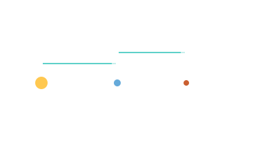

Light-Minute and Light-Year
Distance measured in how long light takes to cross it — the most useful unit for thinking about communication delays and stellar distances.

101 · zoom in
A light-minute is how far light travels in a minute. Light goes 300,000 km per second, which works out to 18 million km in a minute. It's a distance, not a time — confusing but useful. The Sun is 8.3 light-minutes away. Mars is somewhere between 4 and 22 light-minutes depending on orbital geometry.
Why care? Because radio waves travel at the speed of light, and that's also how long your commands take to reach a spacecraft. When Curiosity drives across Mars, the rover team sends a command and then waits — 8 to 22 minutes — for the rover to start moving. Then another 8 to 22 to find out whether it worked. There is NO way to joystick a Mars rover from Earth. Everything important has to be autonomous.
Out at Voyager-1 distance (around 165 AU now), one-way light delay is about 22.5 hours. Send a command today, you find out tomorrow afternoon if it worked. Light-years exist for the next scale up — distance to other stars. The nearest one, Proxima Centauri, is 4.2 light-years. At Voyager's speed it'd take 70,000 years to get there. The universe is large and slow.
Light moves at about 300,000 km/s. A light-second is 300,000 km. A light-minute is 18 million km. A light-year is 9.46 trillion km. They're distances, not times — confusingly named, but useful: 1 AU ≈ 8.3 light-minutes, so 'Mars is 4–22 light-minutes away depending on orbit' tells you the round-trip command latency at any moment.
When Curiosity drives across Mars, the rover team sends a command, then waits 8-22 minutes for the rover to start the manoeuvre — and another 8-22 to find out if it worked. Real-time control is impossible at planetary distances. Far enough out (Voyager 1 at 22.5 light-hours) you're sending one-way nudges that arrive almost a day later.
Light-years are for stars. Proxima Centauri is 4.2 light-years away. Voyager 1 is moving at ~17 km/s, which is fast for a spacecraft but slow against light: at that speed Proxima would take ~70,000 years.
SEE IN THE APP
- /fly /fly's HUD shows Earth-distance in light-minutes during cruise
LEARN MORE
- intro Wikipedia · Light-second